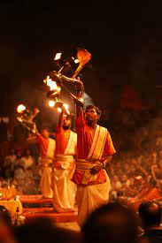
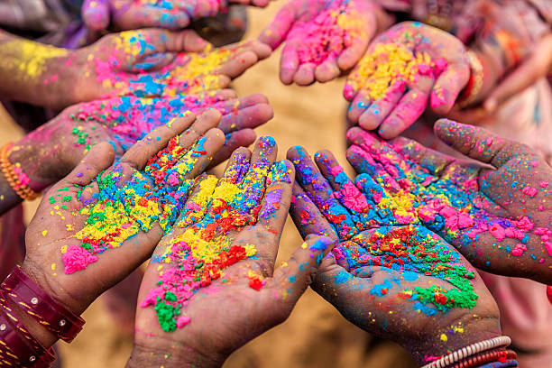
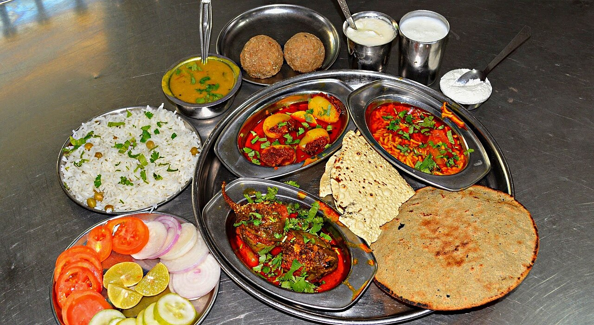
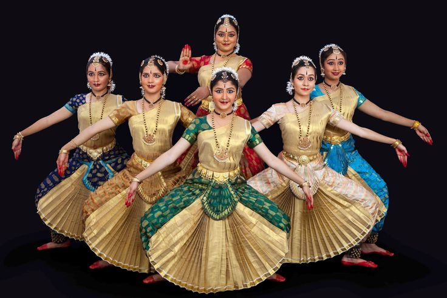

India

AR/VR
India is a land of vibrant traditions, colorful festivals, and diverse cultures. From the majestic Himalayas in the north to the serene backwaters of Kerala in the south, every region in India boasts its unique identity. The country is home to multiple religions, over 22 official languages, and hundreds of dialects. Indian culture is deeply rooted in family values, hospitality, spirituality, and community living.
Festivals like Diwali, Holi, Eid, Christmas, and Navratri are celebrated with grandeur and enthusiasm across the country. These festivals reflect the multicultural ethos of India and are often marked by elaborate rituals, music, dance, and feasting.
Indian cuisine is known for its rich flavors, spices, and regional diversity. North India is famous for dishes like Butter Chicken and Paneer Tikka, while South India offers dosas, idlis, and sambar. Street food, from chaats in Delhi to vada pav in Mumbai, is a must-try for visitors.
India has a rich tradition of classical music and dance forms like Bharatanatyam, Kathak, and Odissi. Folk dances and music also play a major role in local festivities. Art forms such as Madhubani painting, Tanjore painting, and rangoli reflect India’s aesthetic diversity.
 ← Back to Home